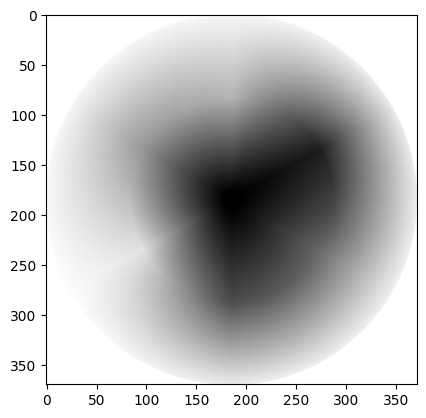

(Scikit-) Image processing, via NumPy and SciPy#
This page will explore foundational image processing techniques, as operations on the values in a NumPy image array. First, we will explore how to achieve specific effects using NumPy and SciPy. We will demonstrate what these operations are doing to an image at the level of the array pixels. After that, we will show how more sophisticated extensions of these techniques can be implemented with Scikit-image. We will focus on the way that Scikit-image often uses NumPy and SciPy operations “under the hood”.
Remember that “image processing” is when we do something that analyzes or changes the numbers inside the image array? Well, in fact, all that even the fanciest image processing software is doing is changing the pixel values inside image arrays, in various ways. This is true for image processing software with a graphical user interface, like Adobe Photoshop and the GNU Image Manipulation Program, as well as for code-based image processing software like Scikit-image.
Let’s again build a simple image array, and look at the ways we can use NumPy alone to achieve some pretty radical changes to the original image. We will then look at the specific purposes that such changes are used for, with more complex images.
First, we create do our usual imports, and create our image array:
import numpy as np
import matplotlib.pyplot as plt
import skimage as ski
# Set precision for float numbers
%precision 2
# Set 'gray' as the default colormap
plt.rcParams['image.cmap'] = 'gray'
# Import hints for some exercises, and custom function for showing image
# attributes.
from skitut import hints, show_attributes
# Create our image array.
i_img = np.array([[0, 0, 0, 0, 0, 0, 0, 0],
[0, 0, 0, 1, 1, 0, 0, 0],
[0, 0, 0, 1, 1, 0, 0, 0],
[0, 0, 0, 0, 0, 0, 0, 0],
[0, 0, 0, 1, 1, 0, 0, 0],
[0, 0, 0, 1, 1, 0, 0, 0],
[0, 0, 0, 1, 1, 0, 0, 0],
[0, 0, 0, 1, 1, 0, 0, 0],
[0, 0, 0, 1, 1, 0, 0, 0],
[0, 0, 0, 1, 1, 0, 0, 0],
[0, 0, 0, 1, 1, 0, 0, 0],
[0, 0, 0, 1, 1, 0, 0, 0],
[0, 0, 0, 1, 1, 0, 0, 0],
[0, 0, 0, 1, 1, 0, 0, 0],
[0, 0, 0, 0, 0, 0, 0, 0]],
dtype=float)
# Show the image array.
plt.imshow(i_img);

We have already encountered the use of np.flip() as a tool for
rudimentary image manipulation. We use it to, well, flip an image array on its
head:
# Flip the array.
flipped_i = np.flip(i_img)
# Show the "raw" array pixel values.
flipped_i
array([[0., 0., 0., 0., 0., 0., 0., 0.],
[0., 0., 0., 1., 1., 0., 0., 0.],
[0., 0., 0., 1., 1., 0., 0., 0.],
[0., 0., 0., 1., 1., 0., 0., 0.],
[0., 0., 0., 1., 1., 0., 0., 0.],
[0., 0., 0., 1., 1., 0., 0., 0.],
[0., 0., 0., 1., 1., 0., 0., 0.],
[0., 0., 0., 1., 1., 0., 0., 0.],
[0., 0., 0., 1., 1., 0., 0., 0.],
[0., 0., 0., 1., 1., 0., 0., 0.],
[0., 0., 0., 1., 1., 0., 0., 0.],
[0., 0., 0., 0., 0., 0., 0., 0.],
[0., 0., 0., 1., 1., 0., 0., 0.],
[0., 0., 0., 1., 1., 0., 0., 0.],
[0., 0., 0., 0., 0., 0., 0., 0.]])
# Display the array with Matplotlib.
plt.imshow(flipped_i);

Resizing by repeating#
Now, any operation that changes the numbers in the array is a form of image manipulation. The term image processing generally means we are applying image manipulations to achieve a specific purpose - such as improving image quality or clarity.
Let’s say we want to resize our image array. Using NumPy, there are many
ways to this same destination. Provided we want to double (or triple, or
quadruple) the size along a given dimension, we can achieve what we want using
np.repeat().
# Double the image, by repeating each row.
doubled_i_rows = np.repeat(i_img,
repeats=2,
axis=0)
# Show the "raw" array pixel values.
doubled_i_rows
array([[0., 0., 0., 0., 0., 0., 0., 0.],
[0., 0., 0., 0., 0., 0., 0., 0.],
[0., 0., 0., 1., 1., 0., 0., 0.],
[0., 0., 0., 1., 1., 0., 0., 0.],
[0., 0., 0., 1., 1., 0., 0., 0.],
[0., 0., 0., 1., 1., 0., 0., 0.],
[0., 0., 0., 0., 0., 0., 0., 0.],
[0., 0., 0., 0., 0., 0., 0., 0.],
[0., 0., 0., 1., 1., 0., 0., 0.],
[0., 0., 0., 1., 1., 0., 0., 0.],
[0., 0., 0., 1., 1., 0., 0., 0.],
[0., 0., 0., 1., 1., 0., 0., 0.],
[0., 0., 0., 1., 1., 0., 0., 0.],
[0., 0., 0., 1., 1., 0., 0., 0.],
[0., 0., 0., 1., 1., 0., 0., 0.],
[0., 0., 0., 1., 1., 0., 0., 0.],
[0., 0., 0., 1., 1., 0., 0., 0.],
[0., 0., 0., 1., 1., 0., 0., 0.],
[0., 0., 0., 1., 1., 0., 0., 0.],
[0., 0., 0., 1., 1., 0., 0., 0.],
[0., 0., 0., 1., 1., 0., 0., 0.],
[0., 0., 0., 1., 1., 0., 0., 0.],
[0., 0., 0., 1., 1., 0., 0., 0.],
[0., 0., 0., 1., 1., 0., 0., 0.],
[0., 0., 0., 1., 1., 0., 0., 0.],
[0., 0., 0., 1., 1., 0., 0., 0.],
[0., 0., 0., 1., 1., 0., 0., 0.],
[0., 0., 0., 1., 1., 0., 0., 0.],
[0., 0., 0., 0., 0., 0., 0., 0.],
[0., 0., 0., 0., 0., 0., 0., 0.]])
# Display the array with Matplotlib.
plt.imshow(doubled_i_rows);

We can compare the attributes, including the shape of each array, using a custom function we defined in the first cell of this notebook:
show_attributes(i_img)
Type: <class 'numpy.ndarray'>
dtype: float64
Shape: (15, 8)
Max Pixel Value: 1.0
Min Pixel Value: 0.0
show_attributes(doubled_i_rows)
Type: <class 'numpy.ndarray'>
dtype: float64
Shape: (30, 8)
Max Pixel Value: 1.0
Min Pixel Value: 0.0
We can see that we have twice the number of rows in the doubled_i_rows image.
We can also double along the columns, by setting axis=1:
# Double along the columns.
doubled_i_cols = np.repeat(i_img,
repeats=2,
axis=1)
doubled_i_cols
array([[0., 0., 0., 0., 0., 0., 0., 0., 0., 0., 0., 0., 0., 0., 0., 0.],
[0., 0., 0., 0., 0., 0., 1., 1., 1., 1., 0., 0., 0., 0., 0., 0.],
[0., 0., 0., 0., 0., 0., 1., 1., 1., 1., 0., 0., 0., 0., 0., 0.],
[0., 0., 0., 0., 0., 0., 0., 0., 0., 0., 0., 0., 0., 0., 0., 0.],
[0., 0., 0., 0., 0., 0., 1., 1., 1., 1., 0., 0., 0., 0., 0., 0.],
[0., 0., 0., 0., 0., 0., 1., 1., 1., 1., 0., 0., 0., 0., 0., 0.],
[0., 0., 0., 0., 0., 0., 1., 1., 1., 1., 0., 0., 0., 0., 0., 0.],
[0., 0., 0., 0., 0., 0., 1., 1., 1., 1., 0., 0., 0., 0., 0., 0.],
[0., 0., 0., 0., 0., 0., 1., 1., 1., 1., 0., 0., 0., 0., 0., 0.],
[0., 0., 0., 0., 0., 0., 1., 1., 1., 1., 0., 0., 0., 0., 0., 0.],
[0., 0., 0., 0., 0., 0., 1., 1., 1., 1., 0., 0., 0., 0., 0., 0.],
[0., 0., 0., 0., 0., 0., 1., 1., 1., 1., 0., 0., 0., 0., 0., 0.],
[0., 0., 0., 0., 0., 0., 1., 1., 1., 1., 0., 0., 0., 0., 0., 0.],
[0., 0., 0., 0., 0., 0., 1., 1., 1., 1., 0., 0., 0., 0., 0., 0.],
[0., 0., 0., 0., 0., 0., 0., 0., 0., 0., 0., 0., 0., 0., 0., 0.]])
plt.imshow(doubled_i_cols);

# Indeed, the columns have doubled.
show_attributes(doubled_i_cols)
Type: <class 'numpy.ndarray'>
dtype: float64
Shape: (15, 16)
Max Pixel Value: 1.0
Min Pixel Value: 0.0
By combining these operations, we can double along both the rows and the columns:
# Double the whole image.
doubled_i = np.repeat(i_img,
repeats=2,
axis=0)
double_doubled_i = np.repeat(doubled_i,
repeats=2,
axis=1)
double_doubled_i
array([[0., 0., 0., 0., 0., 0., 0., 0., 0., 0., 0., 0., 0., 0., 0., 0.],
[0., 0., 0., 0., 0., 0., 0., 0., 0., 0., 0., 0., 0., 0., 0., 0.],
[0., 0., 0., 0., 0., 0., 1., 1., 1., 1., 0., 0., 0., 0., 0., 0.],
[0., 0., 0., 0., 0., 0., 1., 1., 1., 1., 0., 0., 0., 0., 0., 0.],
[0., 0., 0., 0., 0., 0., 1., 1., 1., 1., 0., 0., 0., 0., 0., 0.],
[0., 0., 0., 0., 0., 0., 1., 1., 1., 1., 0., 0., 0., 0., 0., 0.],
[0., 0., 0., 0., 0., 0., 0., 0., 0., 0., 0., 0., 0., 0., 0., 0.],
[0., 0., 0., 0., 0., 0., 0., 0., 0., 0., 0., 0., 0., 0., 0., 0.],
[0., 0., 0., 0., 0., 0., 1., 1., 1., 1., 0., 0., 0., 0., 0., 0.],
[0., 0., 0., 0., 0., 0., 1., 1., 1., 1., 0., 0., 0., 0., 0., 0.],
[0., 0., 0., 0., 0., 0., 1., 1., 1., 1., 0., 0., 0., 0., 0., 0.],
[0., 0., 0., 0., 0., 0., 1., 1., 1., 1., 0., 0., 0., 0., 0., 0.],
[0., 0., 0., 0., 0., 0., 1., 1., 1., 1., 0., 0., 0., 0., 0., 0.],
[0., 0., 0., 0., 0., 0., 1., 1., 1., 1., 0., 0., 0., 0., 0., 0.],
[0., 0., 0., 0., 0., 0., 1., 1., 1., 1., 0., 0., 0., 0., 0., 0.],
[0., 0., 0., 0., 0., 0., 1., 1., 1., 1., 0., 0., 0., 0., 0., 0.],
[0., 0., 0., 0., 0., 0., 1., 1., 1., 1., 0., 0., 0., 0., 0., 0.],
[0., 0., 0., 0., 0., 0., 1., 1., 1., 1., 0., 0., 0., 0., 0., 0.],
[0., 0., 0., 0., 0., 0., 1., 1., 1., 1., 0., 0., 0., 0., 0., 0.],
[0., 0., 0., 0., 0., 0., 1., 1., 1., 1., 0., 0., 0., 0., 0., 0.],
[0., 0., 0., 0., 0., 0., 1., 1., 1., 1., 0., 0., 0., 0., 0., 0.],
[0., 0., 0., 0., 0., 0., 1., 1., 1., 1., 0., 0., 0., 0., 0., 0.],
[0., 0., 0., 0., 0., 0., 1., 1., 1., 1., 0., 0., 0., 0., 0., 0.],
[0., 0., 0., 0., 0., 0., 1., 1., 1., 1., 0., 0., 0., 0., 0., 0.],
[0., 0., 0., 0., 0., 0., 1., 1., 1., 1., 0., 0., 0., 0., 0., 0.],
[0., 0., 0., 0., 0., 0., 1., 1., 1., 1., 0., 0., 0., 0., 0., 0.],
[0., 0., 0., 0., 0., 0., 1., 1., 1., 1., 0., 0., 0., 0., 0., 0.],
[0., 0., 0., 0., 0., 0., 1., 1., 1., 1., 0., 0., 0., 0., 0., 0.],
[0., 0., 0., 0., 0., 0., 0., 0., 0., 0., 0., 0., 0., 0., 0., 0.],
[0., 0., 0., 0., 0., 0., 0., 0., 0., 0., 0., 0., 0., 0., 0., 0.]])
plt.imshow(doubled_i);
# The original image size was (15, 8).
show_attributes(double_doubled_i)
Type: <class 'numpy.ndarray'>
dtype: float64
Shape: (30, 16)
Max Pixel Value: 1.0
Min Pixel Value: 0.0
Exercise 11
Use NumPy operations only to create the following image array, using the
i_img array as your starting point:

Your final array should have the following attributes:
Type: <class 'numpy.ndarray'>
dtype: float64
Shape: (30, 8)
Max Pixel Value: 1.0
Min Pixel Value: 0.0
Hint: you may want to investigate NumPy functions for combining arrays
i_exclam = i_img.copy()
# YOUR CODE HERE
Solution to Exercise 11
You can do this in one line of code by using a combination of np.concat(), np.flip() and plt.imshow(). Notably,np.concat() will “stick” (concatenate) arrays together, rather than np.repeat()-ing the values…
Combined with np.flip() we can produce the desired result in one line of code:
# Combine the two `i_img` arrays, flip the second.
plt.imshow(np.concat([i_img, np.flip(i_img)]));

Exercise 12
Here again is the i_img array, and a printout of its attributes:
plt.imshow(i_img)
show_attributes(i_img);
Type: <class 'numpy.ndarray'>
dtype: float64
Shape: (15, 8)
Max Pixel Value: 1.0
Min Pixel Value: 0.0
Your task is to find a way, again using only NumPy, to alter the i_img array so it becomes this target image:
The output image should have the following attributes:
Type: <class 'numpy.ndarray'>
dtype: float64
Shape: (15, 7)
Max Pixel Value: 1.0
Min Pixel Value: -1.0
Note: notice how we have lost a column, relative to the original i_img array… We also now have -1 values in the array. Have a think about which colors in the displayed image you think that these negative values will correspond to.
Hint: there are various ways to do this, but the most efficient way we could think of is one short line of Numpy processing. You might consider having a look at Functions on arrays for inspiration.
Hint: run the function hints.split_i(), which was imported at the beginning
of this notebook, to see a helpful hint.
# YOUR CODE HERE
split_i = ...
Solution to Exercise 12
The target image can be created using the np.diff() function, which calculates the difference between adjacent values in an array. By default np.diff() operates in steps of 1 across the columns:
# Calculate the difference between values along the columns, in steps of 1.
split_i_solution = np.diff(i_img)
# Show the "raw" NumPy array.
print(split_i_solution)
# Display the image.
plt.imshow(split_i_solution);
[[ 0. 0. 0. 0. 0. 0. 0.]
[ 0. 0. 1. 0. -1. 0. 0.]
[ 0. 0. 1. 0. -1. 0. 0.]
[ 0. 0. 0. 0. 0. 0. 0.]
[ 0. 0. 1. 0. -1. 0. 0.]
[ 0. 0. 1. 0. -1. 0. 0.]
[ 0. 0. 1. 0. -1. 0. 0.]
[ 0. 0. 1. 0. -1. 0. 0.]
[ 0. 0. 1. 0. -1. 0. 0.]
[ 0. 0. 1. 0. -1. 0. 0.]
[ 0. 0. 1. 0. -1. 0. 0.]
[ 0. 0. 1. 0. -1. 0. 0.]
[ 0. 0. 1. 0. -1. 0. 0.]
[ 0. 0. 1. 0. -1. 0. 0.]
[ 0. 0. 0. 0. 0. 0. 0.]]

Why is the background now gray? Well, remember that,
for a single-channel image, colors arise from applying the current colormap.
Visualised with the gray colormap: the most intense (highest value) pixels
are white, and the least intense (lowest value) pixels are black, and
intermediate values are a shade of gray.
When we subtract along the column, with np.diff() the third value is subtracted from the fourth value etc., and so the resulting differences are calculated as:
1 - 0 = 1for 1 values on the left-hand side of the original image, and……
0 - 1 = -1for 1 values on the right-hand side of the original image……and
1 - 1 = 0for adjacent 1’s;0 - 0 = 0for adjacent 0’s.
Essentially we are detecting edges (big changes in intensity between adjacent pixels) in the horizontal direction (e.g. within each row, along the columns):
# Show before/after applying `np.diff()` to the image array.
print(f'\nBefore:\n {i_img}')
print(f'\nAfter:\n {split_i_solution}')
Before:
[[0. 0. 0. 0. 0. 0. 0. 0.]
[0. 0. 0. 1. 1. 0. 0. 0.]
[0. 0. 0. 1. 1. 0. 0. 0.]
[0. 0. 0. 0. 0. 0. 0. 0.]
[0. 0. 0. 1. 1. 0. 0. 0.]
[0. 0. 0. 1. 1. 0. 0. 0.]
[0. 0. 0. 1. 1. 0. 0. 0.]
[0. 0. 0. 1. 1. 0. 0. 0.]
[0. 0. 0. 1. 1. 0. 0. 0.]
[0. 0. 0. 1. 1. 0. 0. 0.]
[0. 0. 0. 1. 1. 0. 0. 0.]
[0. 0. 0. 1. 1. 0. 0. 0.]
[0. 0. 0. 1. 1. 0. 0. 0.]
[0. 0. 0. 1. 1. 0. 0. 0.]
[0. 0. 0. 0. 0. 0. 0. 0.]]
After:
[[ 0. 0. 0. 0. 0. 0. 0.]
[ 0. 0. 1. 0. -1. 0. 0.]
[ 0. 0. 1. 0. -1. 0. 0.]
[ 0. 0. 0. 0. 0. 0. 0.]
[ 0. 0. 1. 0. -1. 0. 0.]
[ 0. 0. 1. 0. -1. 0. 0.]
[ 0. 0. 1. 0. -1. 0. 0.]
[ 0. 0. 1. 0. -1. 0. 0.]
[ 0. 0. 1. 0. -1. 0. 0.]
[ 0. 0. 1. 0. -1. 0. 0.]
[ 0. 0. 1. 0. -1. 0. 0.]
[ 0. 0. 1. 0. -1. 0. 0.]
[ 0. 0. 1. 0. -1. 0. 0.]
[ 0. 0. 1. 0. -1. 0. 0.]
[ 0. 0. 0. 0. 0. 0. 0.]]
So our highest values are now 1, our lowest values are -1, and our intermediate values are 0 (e.g. where the difference between elements was calculated from 1 - 1 = 0 or 0 - 0 = 0, indicating no change in the gradient of pixel intensity). A range from -1 to 1 is still supported in skimage for the float64 dtype.
White areas (pixel = 1) indicate a change between pixels in the horizontal direction (moving left-to-right) from black-to-white, in the original image. Black areas (pixel = -1) indicate a change in the horizontal direction from white-to-black. Grey areas indicate no change (pixel = 0).
We can detect big changes (edges) in the vertical direction by telling np.diff() to operate along the rows, rather than along the columns:
vertical_gradients = np.diff(i_img,
axis=0) # Subtract along the rows, not the columns.
plt.imshow(vertical_gradients);

Resizing an image with skimage#
The ski.transform module contains a function called resize. Somewhat
obviously, ski.transform.resize() takes an input image and a requested image
shape, and returns an output image of the requested size. Because all
computer images are at least 2D arrays, this involves changing the shape of
the image. Let’s demonstrate this with the following image array:
# Create an image array.
squares = np.array([[1, 0,],
[0, 1,]],
dtype=float)
# Show the array ("raw" output from NumPy)
squares
array([[1., 0.],
[0., 1.]])
# Show the array, visualised with Matplotlib
plt.matshow(squares);

What happens if we resize squares to (10, 10)? We will use the optional Boolean preserve_range argument for forward compatibility with the next big release of the Scikit-image package. It has the effect of preventing some automatic processing of the range of values in the image array on input.
# Pass our `squares` array to the `ski.transform.resize()` function.
squares_ten_by_ten = ski.transform.resize(squares,
output_shape=(10, 10),
preserve_range=True)
# Show the resized array.
squares_ten_by_ten
array([[0.52, 0.56, 0.6 , 0.56, 0.52, 0.48, 0.44, 0.4 , 0.44, 0.48],
[0.56, 0.68, 0.8 , 0.68, 0.56, 0.44, 0.32, 0.2 , 0.32, 0.44],
[0.6 , 0.8 , 1. , 0.8 , 0.6 , 0.4 , 0.2 , 0. , 0.2 , 0.4 ],
[0.56, 0.68, 0.8 , 0.68, 0.56, 0.44, 0.32, 0.2 , 0.32, 0.44],
[0.52, 0.56, 0.6 , 0.56, 0.52, 0.48, 0.44, 0.4 , 0.44, 0.48],
[0.48, 0.44, 0.4 , 0.44, 0.48, 0.52, 0.56, 0.6 , 0.56, 0.52],
[0.44, 0.32, 0.2 , 0.32, 0.44, 0.56, 0.68, 0.8 , 0.68, 0.56],
[0.4 , 0.2 , 0. , 0.2 , 0.4 , 0.6 , 0.8 , 1. , 0.8 , 0.6 ],
[0.44, 0.32, 0.2 , 0.32, 0.44, 0.56, 0.68, 0.8 , 0.68, 0.56],
[0.48, 0.44, 0.4 , 0.44, 0.48, 0.52, 0.56, 0.6 , 0.56, 0.52]])
# Show the image attributes.
show_attributes(squares_ten_by_ten)
Type: <class 'numpy.ndarray'>
dtype: float64
Shape: (10, 10)
Max Pixel Value: 1.0
Min Pixel Value: 0.0
# Display the image.
plt.imshow(squares_ten_by_ten);

Well, that is certainly more artistic than the original!
We now have many more unique values in the output array than there were in the input array (the input array contained only 0’s and 1’s), because skimage is interpolating for many new pixels. Interpolation is the process of estimating values for the new pixels which fall in between the array pixels from the original array image, based on the weighted average of the values of the original pixels to which they are nearest.
# Show the `unique` values.
np.unique(squares_ten_by_ten)
array([0. , 0.2 , 0.2 , 0.2 , 0.32, 0.32, 0.32, 0.32, 0.4 , 0.4 , 0.4 ,
0.44, 0.44, 0.48, 0.48, 0.52, 0.52, 0.56, 0.56, 0.56, 0.6 , 0.6 ,
0.6 , 0.68, 0.68, 0.68, 0.68, 0.8 , 0.8 , 0.8 , 1. ])
The array pixels highlighted in red are the original pixels from the (2, 2)
original array:

All the other pixels have been added by skimage during the resize-ing process. Pixels closer to the original pixels share closer intensity values to the original pixel (meaning they are more black or more white, depending on the original pixel). Images further from the original pixels become more gray.
We can control the type of interpolation that skimage uses by changing the
(somewhat cryptically named) order argument. Setting order=0 will activate
nearest neighbor
interpolation.
This method of interpolation (estimation) merely uses the nearest existing
pixel to give the value for any new pixel in the output image.
# Pass our `squares` array to the `ski.transform.resize()` function.
squares_ten_by_ten = ski.transform.resize(squares,
output_shape=(10, 10),
preserve_range=True,
order=0) # Nearest neighbor
# Show the resized array.
plt.imshow(squares_ten_by_ten);

This seems much closer to what we want when we resize the image. However, the results of image processing are highly context-dependent, and there may be images for which the default interpolation setting works better…
Rotation#
Another common image manipulation we may want to do is to rotate an image.
Rotations in 90 degree increments#
Should we only want to rotate by increments of 90 degrees, we can use the
helpfully named np.rot90() function:
# Rotate the image.
rotated_i = np.rot90(i_img)
rotated_i
array([[0., 0., 0., 0., 0., 0., 0., 0., 0., 0., 0., 0., 0., 0., 0.],
[0., 0., 0., 0., 0., 0., 0., 0., 0., 0., 0., 0., 0., 0., 0.],
[0., 0., 0., 0., 0., 0., 0., 0., 0., 0., 0., 0., 0., 0., 0.],
[0., 1., 1., 0., 1., 1., 1., 1., 1., 1., 1., 1., 1., 1., 0.],
[0., 1., 1., 0., 1., 1., 1., 1., 1., 1., 1., 1., 1., 1., 0.],
[0., 0., 0., 0., 0., 0., 0., 0., 0., 0., 0., 0., 0., 0., 0.],
[0., 0., 0., 0., 0., 0., 0., 0., 0., 0., 0., 0., 0., 0., 0.],
[0., 0., 0., 0., 0., 0., 0., 0., 0., 0., 0., 0., 0., 0., 0.]])
plt.imshow(rotated_i);

We can control the number of rotations with the k argument:
# Rotate the image, twice!
rotated_i_180 = np.rot90(i_img,
k=2) # Two 90 degree rotations.
rotated_i_180
array([[0., 0., 0., 0., 0., 0., 0., 0.],
[0., 0., 0., 1., 1., 0., 0., 0.],
[0., 0., 0., 1., 1., 0., 0., 0.],
[0., 0., 0., 1., 1., 0., 0., 0.],
[0., 0., 0., 1., 1., 0., 0., 0.],
[0., 0., 0., 1., 1., 0., 0., 0.],
[0., 0., 0., 1., 1., 0., 0., 0.],
[0., 0., 0., 1., 1., 0., 0., 0.],
[0., 0., 0., 1., 1., 0., 0., 0.],
[0., 0., 0., 1., 1., 0., 0., 0.],
[0., 0., 0., 1., 1., 0., 0., 0.],
[0., 0., 0., 0., 0., 0., 0., 0.],
[0., 0., 0., 1., 1., 0., 0., 0.],
[0., 0., 0., 1., 1., 0., 0., 0.],
[0., 0., 0., 0., 0., 0., 0., 0.]])
plt.imshow(rotated_i_180);
Rotating in increments of 90 degrees will not change the size (e.g. number of pixels) in the array, however it will change the integer index location of the pixel values:
# Show the shape of the original image and both 90 degree rotated images.
plt.subplot(1, 3, 1)
plt.title(f"`.shape` = {i_img.shape}")
plt.imshow(i_img)
plt.subplot(1, 3, 2)
plt.title(f"`.shape` = {rotated_i.shape}")
plt.imshow(rotated_i)
plt.subplot(1, 3, 3)
plt.title(f"`.shape` = {rotated_i_180.shape}")
plt.imshow(rotated_i_180);

# Original image and 90 degree rotations all have the same number of elements (15*8 = 120)
i_img.size == rotated_i.size == rotated_i_180.size
True
Rotations by arbitrary angles with Scipy#
To rotate an image by more flexible increments than 90 degrees, we need to
bring in SciPy, another foundation library for Scikit-image. The SciPy
function ndimage.rotate() offers more flexible rotation. However, rotating
by other angles will alter both the shape and size of the output image:
# Import SciPy using the conventional name (`sp`).
import scipy as sp
# Rotate the image by 193 degrees.
rotated_i_193 = sp.ndimage.rotate(i_img,
angle=193) # Specify the rotation angle.
# Show the "raw" array.
rotated_i_193
array([[ 0.00e+00, 0.00e+00, 0.00e+00, 0.00e+00, 0.00e+00, 0.00e+00,
0.00e+00, 0.00e+00, 0.00e+00, 0.00e+00, 0.00e+00],
[ 0.00e+00, 0.00e+00, 0.00e+00, 9.19e-02, 3.28e-01, 1.46e-02,
-9.30e-03, 1.14e-03, 0.00e+00, 0.00e+00, 0.00e+00],
[ 0.00e+00, 1.19e-02, -7.40e-02, 8.85e-01, 1.30e+00, 2.34e-01,
-5.79e-02, 9.74e-03, 0.00e+00, 0.00e+00, 0.00e+00],
[ 0.00e+00, 2.30e-02, -9.94e-02, 5.32e-01, 1.16e+00, 4.46e-01,
-9.18e-02, 1.97e-02, 0.00e+00, 0.00e+00, 0.00e+00],
[ 0.00e+00, 1.33e-02, -7.05e-02, 2.94e-01, 1.18e+00, 7.22e-01,
-9.12e-02, 2.01e-02, 0.00e+00, 0.00e+00, 0.00e+00],
[ 0.00e+00, 3.35e-03, -2.49e-02, 7.87e-02, 1.06e+00, 9.45e-01,
-2.01e-02, 1.59e-03, 3.04e-05, 0.00e+00, 0.00e+00],
[ 0.00e+00, 0.00e+00, 1.05e-02, -5.31e-02, 8.77e-01, 1.11e+00,
1.43e-01, -4.04e-02, 6.37e-03, 0.00e+00, 0.00e+00],
[ 0.00e+00, 0.00e+00, 2.16e-02, -9.77e-02, 6.31e-01, 1.19e+00,
3.73e-01, -8.34e-02, 1.70e-02, 0.00e+00, 0.00e+00],
[ 0.00e+00, 0.00e+00, 1.69e-02, -8.35e-02, 3.76e-01, 1.20e+00,
6.38e-01, -9.80e-02, 2.14e-02, 0.00e+00, 0.00e+00],
[ 0.00e+00, 0.00e+00, 6.43e-03, -4.04e-02, 1.40e-01, 1.07e+00,
8.46e-01, -5.22e-02, 1.08e-02, 0.00e+00, 0.00e+00],
[ 0.00e+00, 0.00e+00, 2.94e-05, 1.59e-03, -2.13e-02, 1.05e+00,
1.21e+00, 8.46e-02, -2.23e-02, 2.08e-03, 0.00e+00],
[ 0.00e+00, 0.00e+00, 0.00e+00, 2.07e-02, -7.40e-02, 3.77e-01,
2.86e-01, 1.34e-02, -6.91e-04, 2.08e-03, 0.00e+00],
[ 0.00e+00, 0.00e+00, 0.00e+00, 2.41e-04, -3.74e-03, 1.05e-01,
6.11e-01, 4.42e-01, -1.04e-01, 2.57e-02, 0.00e+00],
[ 0.00e+00, 0.00e+00, 0.00e+00, 8.91e-03, -6.26e-02, 2.63e-01,
1.43e+00, 9.24e-01, -7.36e-02, 1.14e-02, 0.00e+00],
[ 0.00e+00, 0.00e+00, 0.00e+00, 1.17e-03, -9.12e-03, 1.40e-02,
3.06e-01, 8.45e-02, 0.00e+00, 0.00e+00, 0.00e+00],
[ 0.00e+00, 0.00e+00, 0.00e+00, 0.00e+00, 0.00e+00, 0.00e+00,
0.00e+00, 0.00e+00, 0.00e+00, 0.00e+00, 0.00e+00]])
# Render the image graphically.
plt.imshow(rotated_i_193);

# Show the attributes of the rotated image.
show_attributes(rotated_i_193)
Type: <class 'numpy.ndarray'>
dtype: float64
Shape: (16, 11)
Max Pixel Value: 1.43
Min Pixel Value: -0.1
The cell below will loop through some different rotation angles, the shape of each image is shown below each plot:
# A for loop to show multiple rotations, and the effect on
# the shape of the resultant image array.
plt.figure(figsize=(12, 4))
for i, i_2 in enumerate(np.arange(361, step=45)):
plt.subplot(1, 9, i+1)
current_rot = sp.ndimage.rotate(i_img,
angle=i_2)
plt.imshow(current_rot)
plt.title(f"{i_2}°")
plt.xlabel(f"{current_rot.shape}")
plt.xticks([])
plt.yticks([])

By default, the shape is altered so that the rotated original array is shown
within the output array. SciPy uses interpolation to estimate the values of
the pixels it adds, where the shape of the output image is larger than the
shape of the input image.
We can disable this behaviour by settings reshape=False, however, this means that we will clip any parts of the array that have been rotated out of the field of view of the original array shape.
# A for loop to show multiple rotations, and the effect on
# the shape of the resultant image array, but this time
# we do not allow SciPy to reshape the output arrays.
plt.figure(figsize=(12, 4))
for i, i_2 in enumerate(np.arange(361, step=45)):
plt.subplot(1, 9, i+1)
current_rot = sp.ndimage.rotate(i_img,
angle=i_2,
reshape=False) # Don't reshape output.
plt.imshow(current_rot)
plt.title(f"{i_2}°")
plt.xlabel(f"{current_rot.shape}")
plt.xticks([])
plt.yticks([])

Rotating with skimage#
Let’s now look now at how rotating image arrays is handled in skimage. Image rotation, which we saw above using np.rot90 and scipy.ndimage.rotate() can be achieved using the straightforwardly named ski.transform.rotate(), and the syntax works identically to scipy.ndimage.rotate(). All this rotating has left us thirsty and caffeine-deprived, so let’s get some coffee:
# Import and show an image.
coffee = ski.data.coffee()
plt.imshow(coffee);

We can achieve easy and flexible rotation with ski.transform.rotate():
# Rotate the `coffee` image with `skimage`.
# resize=True ensures all the original image fits inside the output.
rotated_coffee = ski.transform.rotate(coffee,
angle=75,
resize=True)
plt.imshow(rotated_coffee);

The cell below plots a variety of rotations, using skimage.transform.rotate() to perform each rotation, this time disabling resize of the output to fit the rotated input.
# Many rotations...
plt.figure(figsize=(16, 10))
for i, i_2 in enumerate(np.arange(361, step=45)):
plt.subplot(3, 3, i+1)
current_rot = ski.transform.rotate(coffee,
angle=i_2,
resize=False)
plt.imshow(current_rot)
plt.title(f"{i_2}°")
plt.xticks([])
plt.yticks([])

Rotation compared to flips and transpos#
Rotating is a different operation that flipping the image with np.flip. Flipping causes a reflection in the image around its center. The difference between rotation and applying a flip becomes obvious with an image that is not left-right symmetrical.
The cell below demonstrates np.flip-ping an image, as well as np.rot-ating an image by 180 degrees:
# Load in `camera`
camera = ski.data.camera()
# Rotate, flip 'n' plot!
plt.figure(figsize=(14, 4))
plt.subplot(1, 3, 1)
plt.imshow(camera)
plt.title('Original')
plt.subplot(1, 3, 2)
plt.imshow(np.rot90(camera, k=2))
plt.title('np.rot90(k=2)')
plt.subplot(1, 3, 3)
plt.imshow(np.flip(camera))
plt.title('np.flip()');

Similarly, rotations differ from transpose operations on the array.
Specifically for 90 degree rotations, you might be tempted to use a NumPy shortcut, and use the .T (transpose) method. This however, will do something different to rotation. The cell below demonstrates the .T method, with the camera image:
# Transpose `camera`.
camera_transposed = camera.T
show_attributes(camera_transposed)
plt.imshow(camera_transposed)
plt.title("camera.T");
Type: <class 'numpy.ndarray'>
dtype: uint8
Shape: (512, 512)
Max Pixel Value: 255
Min Pixel Value: 0

We now show a 90 degree rotation, using ski.transform.rotate()
# Rotate by 90 degrees.
plt.imshow(ski.transform.rotate(camera,
angle=90))
plt.title('ski.transform.rotate()');

We can see that the cameraman is facing a different direction in each image (taking a photo of the bottom of the image for the .T method, and taking a photo of the top of the image for a 90 degree rotation via skimage).
The difference here is that transposing an image switches the rows and columns, such that the first row becomes the first column etc. Conversely, skimage.transform.rotate() pivots the pixels around a central point. Essentially, transposing gives a mirroring effect which is different from a rotation.
Pay attention to the location of the spoon in the coffee image. First, we ski.transform.rotate() it by 90 degrees. Then, we show it .transposed, switching the rows and columns. As coffee is a 3D image, the .T method will produce an error, because the color channels will be moved into the wrong dimension - to avoid this we use the .transpose method, to keep the color channels in the third dimension, whilst switching the rows and columns:
# The `shape` of the original `coffee` image.
coffee.shape
(400, 600, 3)
# Why we cannot use the `.T` method. We get an array which
# is the wrong `shape` for a color image!
coffee.T.shape
(3, 600, 400)
# Move the columns into the rows, the rows into the columns, and leave the
# color channels in the third dimension.
coffee_transposed = coffee.transpose((1, 0, 2))
plt.imshow(coffee_transposed)
# Show the attributes (not that the `shape` is still correct for a color
# image).
show_attributes(coffee_transposed)
Type: <class 'numpy.ndarray'>
dtype: uint8
Shape: (600, 400, 3)
Max Pixel Value: 255
Min Pixel Value: 0

Compare this to a 90 degree rotation via skimage; pay attention to the
spoon!
# Show the difference between rotating and transposing.
plt.subplot(1, 2, 1)
plt.imshow(ski.transform.rotate(coffee, angle=90, resize=True))
plt.title("ski.transform.rotate()")
plt.axis('off')
plt.subplot(1, 2, 2)
plt.imshow(coffee_transposed)
plt.title(".transpose()")
plt.axis('off');

Unless you specifically want a mirroring transformation, then use .rotate()!
Exercise 13
Your mission now is to transform camera into this slightly brain-bending image:

For comparison, here is the original camera image and its attributes:
camera = ski.data.camera()
plt.imshow(camera)
<matplotlib.image.AxesImage at 0x7eff8457bed0>

show_attributes(camera)
Type: <class 'numpy.ndarray'>
dtype: uint8
Shape: (512, 512)
Max Pixel Value: 255
Min Pixel Value: 0
Your final image should have the following attributes:
Type: <class 'numpy.ndarray'>
dtype: uint8
Shape: (512, 1024)
Max Pixel Value: 255
Min Pixel Value: 0
Hint: if you did not complete the earlier exercise involving combining two
i_img arrays, then you may want to investigate NumPy functions for combining
arrays together to complete the current exercise…
Caution: you may run into some errors/odd outcomes because of dtypes
here… so use the ski.util conversion functions if you need to…
# YOUR CODE HERE
look_at_me = ski.data.camera()
Solution to Exercise 13
Here we need a transpose operation, followed by a rotation, followed by a concatenation.
That is a mouthful, let’s break it down. First we transpose the camera array, we can use .T here rather than .transpose as we are dealing with a 2D grayscale image:
# Transpose `camera`.
camera = ski.data.camera()
mirror_camera = camera.T
plt.imshow(mirror_camera);

Now the image is transposed, we have achieved our “mirror” effect. To get this mirrored cameraman to look the other guy in the eye, we now need to rotate the image 270 degrees, for which we use ski.transform.rotate():
# Rotate and show.
rotated_mirror_camera = ski.transform.rotate(mirror_camera,
angle=270,
resize=True) # Preserve shape.
plt.imshow(rotated_mirror_camera);

Now, we must combine the images, using np.concat(), combining along the columns (axis = 1). First, however, we need to ensure the dtypes match! If we don’t we get an unexpected result:
# Combine the images, non-matching `dtype`s...
look_at_me = np.concat([camera, rotated_mirror_camera], axis=1)
plt.imshow(look_at_me);

Oops. This has occurred because ski.transform.rotate() has converted the image to the float64 dtype, whereas the original is uint8:
# The attributes of the original image (look at the `dtype`).
show_attributes(camera)
Type: <class 'numpy.ndarray'>
dtype: uint8
Shape: (512, 512)
Max Pixel Value: 255
Min Pixel Value: 0
# The attributes of the rotated mirror image (look at the `dtype`).
show_attributes(rotated_mirror_camera)
Type: <class 'numpy.ndarray'>
dtype: float64
Shape: (512, 512)
Max Pixel Value: 1.0
Min Pixel Value: 0.0
Using ski.util.img_as_ubyte() will ensure that the pixel values match, giving us our final, surreal result:
# Ensure matching `dtype`s.
rotated_mirror_camera = ski.util.img_as_ubyte(rotated_mirror_camera)
# Combine the images and show the result.
look_at_me = np.concat([camera, rotated_mirror_camera], axis=1)
plt.imshow(look_at_me);

If in doubt, check the dtype!
Exercise 14
For this exercise, you should load in the cat image from ski.data. Here is the original cat image:
cat = ski.data.cat()
plt.imshow(cat)
<matplotlib.image.AxesImage at 0x7eff8439f610>

The original image has the following attributes:
show_attributes(cat)
Type: <class 'numpy.ndarray'>
dtype: uint8
Shape: (300, 451, 3)
Max Pixel Value: 231
Min Pixel Value: 0
Now, using only numpy and skimage, try to recreate this target image:

…poor cat!
Your output image should have the following attributes:
Type: <class 'numpy.ndarray'>
dtype: float64
Shape: (30, 30, 3)
Max Pixel Value: 0.76
Min Pixel Value: 0.0
Hint: Note the yellow tinge to the image. You can achieve this tinge by modifying the weights of the colors in the image.
# YOUR CODE HERE
Solution to Exercise 14
The solution here again involves multiple steps. First we load in the cat image:
# Load in and show the `cat` image.
cat_solution = ski.data.cat()
show_attributes(cat_solution)
plt.imshow(cat_solution);
Type: <class 'numpy.ndarray'>
dtype: uint8
Shape: (300, 451, 3)
Max Pixel Value: 231
Min Pixel Value: 0
Next, to replicate the yellow-y tone of the target image, we “switch off” the blue color channel (because red + green = yellow):
# Make it yellow!
cat_solution[:, :, 2] = 0
plt.imshow(cat_solution);

The target image has the .shape (30, 30, 3); the original image has the .shape (300, 451, 3).
To get the correct output image size, we must downscale the image. To do this, we can use ski.transform.resize():
# Downscale the image.
cat_solution = ski.transform.resize(cat_solution,
output_shape=(30, 30, 3))
# Show the result.
show_attributes(cat_solution)
plt.imshow(cat_solution);
Type: <class 'numpy.ndarray'>
dtype: float64
Shape: (30, 30, 3)
Max Pixel Value: 0.8
Min Pixel Value: 0.0

You’ll notice that downsizing the image has seriously downgraded the quality. This makes sense, because the original high-resolution image utilized its many pixels to depict intricate details. After resizing to a lower-resolution, this detail is lost, because now we are trying to show the same image using substantially fewer pixels. skimage has done some averaging behind the scenes, to work out what should go in the remaining pixels. At least we can still see the image is of a cat…
Now, we can see that the target image requires a rotation, through good judgment, or just trial and error, we can work out that this needs to be 45 degrees. We can also see that the image of the downscaled cat does not “fit” inside the final image. As such, we need to rotate without resizing the image. By default, resize=False so we can leave it on the default setting:
# Rotate and show the result.
cat_solution = ski.transform.rotate(cat_solution,
angle=45)
show_attributes(cat_solution)
plt.imshow(cat_solution);
Type: <class 'numpy.ndarray'>
dtype: float64
Shape: (30, 30, 3)
Max Pixel Value: 0.76
Min Pixel Value: 0.0

We will leave it to you to use this image as a logo for your “Pixel Cat” meme coin.
Cropping#
The process of cropping is the removal of areas of pixels from an image.
Because our images are just NumPy arrays, cropping is just NumPy indexing
(duh!). As such, we can crop images just with indexing operations, without
using specific NumPy (or skimage) functions.
For instance, we can “shave” our i_img array in half, along the columns by slicing along the columns:
# Cut in half.
half_i = i_img[:, 4:8]
half_i
array([[0., 0., 0., 0.],
[1., 0., 0., 0.],
[1., 0., 0., 0.],
[0., 0., 0., 0.],
[1., 0., 0., 0.],
[1., 0., 0., 0.],
[1., 0., 0., 0.],
[1., 0., 0., 0.],
[1., 0., 0., 0.],
[1., 0., 0., 0.],
[1., 0., 0., 0.],
[1., 0., 0., 0.],
[1., 0., 0., 0.],
[1., 0., 0., 0.],
[0., 0., 0., 0.]])
plt.imshow(half_i);

Likewise along the rows (albeit the number of rows is odd!):
plt.imshow(i_img[0:8, :]);

Exercise 15
Take the original camera image:
camera = ski.data.camera()
plt.imshow(camera)
<matplotlib.image.AxesImage at 0x7eff9a0aaad0>
…and crop it down to this target image, using only NumPy indexing:

These are the attributes that your final image should possess:
Type: <class 'numpy.ndarray'>
dtype: uint8
Shape: (30, 80)
Max Pixel Value: 250
Min Pixel Value: 23
Hint: using plt.grid() might be of use in identifying the part of the
image you need.
# YOUR CODE HERE
camera_crop_exercise = camera.copy()
plt.imshow(camera);
Solution to Exercise 15
This is a simple task once you know what indices you need. Using plt.grid() can make this information easier to obtain:
# Show `camera`, with a helpful grid.
plt.imshow(camera)
plt.grid();

The exact indices we used are here:
# Solution.
plt.imshow(camera[130:160, 240:320]);

# Solution (attributes).
show_attributes(camera[130:160, 240:320])
Type: <class 'numpy.ndarray'>
dtype: uint8
Shape: (30, 80)
Max Pixel Value: 250
Min Pixel Value: 23
Masks#
In image processing, a mask is an array where the elements express weights or binary (0 or 1) values to select areas in another image (array).
A mask is “placed” on an image, and one typically then applies operations to
the pixels indicated by the mask. For example, one might use the mask with an
image array to replace pixels indicated by the mask with a specific value.
Let’s demonstrate with a real image — a grayscale version of the standard
coffee image:
# Make coffee RGB image into single-channel image.
coffee_gray = ski.color.rgb2gray(ski.data.coffee())
show_attributes(coffee_gray)
plt.imshow(coffee_gray);
Type: <class 'numpy.ndarray'>
dtype: float64
Shape: (400, 600)
Max Pixel Value: 1.0
Min Pixel Value: 0.0

In this case we are going to create a new mask image, that corresponds to the
coffee_gray image (has the same shape), but where we will create the mask
values with a mathematical formula using the row and column indices. In fact
we’ll do this to create a circular mask. Bear with us, all should be come
clear as we go.
# Unpack and store the number of rows and number of columns.
dim_0, dim_1 = coffee_gray.shape
dim_0, dim_1
(400, 600)
We are going to create a circular mask, using the formula for a circle.
That formula needs the i (row) and j coordinates for each pixel, the center coordinate of the circle, and the radius r of the desired circle.
Call the row and column center coordinates \(c_i, c_j\) respectively.
We can tell if a particular pixel at (i, j) is outside the circle by testing whether the Euclidean distance of the pixel position (i, j) from the center is greater than \(r\).
First we use the Numpy meshgrid function to return two arrays, one containing all the i (row) coordinates at each pixel, and another containing all the j (column) coordinates at each pixel.
# indexing='ij' tells meshgrid to return `i` and `j` coordinates. There are other modes, not relevant here.
i_coords, j_coords = np.meshgrid(np.arange(dim_0), np.arange(dim_1), indexing='ij')
# i coordinate for each element.
i_coords
array([[ 0, 0, 0, ..., 0, 0, 0],
[ 1, 1, 1, ..., 1, 1, 1],
[ 2, 2, 2, ..., 2, 2, 2],
...,
[397, 397, 397, ..., 397, 397, 397],
[398, 398, 398, ..., 398, 398, 398],
[399, 399, 399, ..., 399, 399, 399]], shape=(400, 600))
# j coordinate for each element.
j_coords
array([[ 0, 1, 2, ..., 597, 598, 599],
[ 0, 1, 2, ..., 597, 598, 599],
[ 0, 1, 2, ..., 597, 598, 599],
...,
[ 0, 1, 2, ..., 597, 598, 599],
[ 0, 1, 2, ..., 597, 598, 599],
[ 0, 1, 2, ..., 597, 598, 599]], shape=(400, 600))
# The coordinate of the image center in pixels. Remember that pixel indices
# start at 0.
c_i, c_j = (dim_0 - 1) / 2, (dim_1 - 1) / 2
# Radius
r = 275
We can then use the formula above to generate a 2D array where True (== 1) means outside the circle and False (== 0) means inside the circle.
# Create a circular mask.
mask = np.sqrt((i_coords - c_i) ** 2 + (j_coords - c_j) ** 2) > r
show_attributes(mask)
plt.imshow(mask);
Type: <class 'numpy.ndarray'>
dtype: bool
Shape: (400, 600)
Max Pixel Value: True
Min Pixel Value: False

Once we have our mask - which is just a Boolean array - it is just a matter of Boolean indexing to set all the pixel values in the image to the same value, where there is a True in the corresponding element in the mask:
# Apply the mask.
coffee_gray_masked = coffee_gray.copy()
coffee_gray_masked[mask] = 0
plt.matshow(coffee_gray_masked);

Exercise 16
Start with the camera image:
camera = ski.data.camera()
plt.imshow(camera);
Now consider this formula, where \(p\) is some constant:
(where \(x^{1/3}\) is the cube-root of \(x\)).
Use that formula, with some suitable value for p, and masking as above, to create the following image:
Solution to Exercise 16
We apply the formula above to the i and j coordinates of the camera
image:
# Solution pt 1.
cam_c_i, cam_c_j = (np.array(camera.shape) - 1) / 2
p = 55 # By experiment.
i_cam, j_cam = np.meshgrid(np.arange(camera.shape[0]),
np.arange(camera.shape[1]),
indexing='ij')
# Apply formula to make mask.
mask_camera = ((i_cam - cam_c_i) ** 3 + (j_cam - cam_c_j) ** 3) ** (1 / 3) > p
plt.imshow(mask_camera);
/tmp/ipykernel_2664/2746963989.py:8: RuntimeWarning: invalid value encountered in power
mask_camera = ((i_cam - cam_c_i) ** 3 + (j_cam - cam_c_j) ** 3) ** (1 / 3) > p

# Solution pt 2.
camera_masked_solution = camera.copy()
camera_masked_solution[mask_camera] = 1
plt.imshow(camera_masked_solution);

Inverting image colors with Numpy#
We saw color inversion on an earlier page. This is where all the pixel values in an image are, shockingly, inverted: high numbers become low numbers and vice versa:
For a binary image, this involves swapping 1s and 0s…
# Original image
i_img
array([[0., 0., 0., 0., 0., 0., 0., 0.],
[0., 0., 0., 1., 1., 0., 0., 0.],
[0., 0., 0., 1., 1., 0., 0., 0.],
[0., 0., 0., 0., 0., 0., 0., 0.],
[0., 0., 0., 1., 1., 0., 0., 0.],
[0., 0., 0., 1., 1., 0., 0., 0.],
[0., 0., 0., 1., 1., 0., 0., 0.],
[0., 0., 0., 1., 1., 0., 0., 0.],
[0., 0., 0., 1., 1., 0., 0., 0.],
[0., 0., 0., 1., 1., 0., 0., 0.],
[0., 0., 0., 1., 1., 0., 0., 0.],
[0., 0., 0., 1., 1., 0., 0., 0.],
[0., 0., 0., 1., 1., 0., 0., 0.],
[0., 0., 0., 1., 1., 0., 0., 0.],
[0., 0., 0., 0., 0., 0., 0., 0.]])
plt.imshow(i_img);
…which can be accomplished with some simple numeric operations:
inverted_i = 1 - i_img
inverted_i
array([[1., 1., 1., 1., 1., 1., 1., 1.],
[1., 1., 1., 0., 0., 1., 1., 1.],
[1., 1., 1., 0., 0., 1., 1., 1.],
[1., 1., 1., 1., 1., 1., 1., 1.],
[1., 1., 1., 0., 0., 1., 1., 1.],
[1., 1., 1., 0., 0., 1., 1., 1.],
[1., 1., 1., 0., 0., 1., 1., 1.],
[1., 1., 1., 0., 0., 1., 1., 1.],
[1., 1., 1., 0., 0., 1., 1., 1.],
[1., 1., 1., 0., 0., 1., 1., 1.],
[1., 1., 1., 0., 0., 1., 1., 1.],
[1., 1., 1., 0., 0., 1., 1., 1.],
[1., 1., 1., 0., 0., 1., 1., 1.],
[1., 1., 1., 0., 0., 1., 1., 1.],
[1., 1., 1., 1., 1., 1., 1., 1.]])
plt.imshow(inverted_i);

What about a color image?
colorwheel = ski.data.colorwheel()
show_attributes(colorwheel)
plt.imshow(colorwheel);
Type: <class 'numpy.ndarray'>
dtype: uint8
Shape: (370, 371, 3)
Max Pixel Value: 255
Min Pixel Value: 0

Because the maximum value is now 255, we can subtract each array pixel value in each color channel from 255 to “reverse” the values:
# Invert the color image, manually.
inverted_colorwheel = colorwheel.copy()
for i in np.arange(3):
inverted_colorwheel[:, :, i] = 255 - inverted_colorwheel[:, :, i]
plt.imshow(inverted_colorwheel);

Inverting colors with skimage#
ski.util.invert() handles color inversion, we simply pass it a color NumPy image array and voilà!:
# Invert the color image, with `skimage`.
invert_colorwheel_with_skimage = ski.util.invert(colorwheel)
plt.imshow(invert_colorwheel_with_skimage);
Exercise 17
Now over to you. You will be working on the brick image from ski.data:
brick = ski.data.brick()
show_attributes(brick)
plt.imshow(brick)
Type: <class 'numpy.ndarray'>
dtype: uint8
Shape: (512, 512)
Max Pixel Value: 207
Min Pixel Value: 63
<matplotlib.image.AxesImage at 0x7eff89666350>

You should then invert every 2nd element on even numbered rows…
So on even numbered rows (row 0, 2, 4, 6, etc.), if you went through the elements in pairs along the row, the second element in each pair should be inverted, vs the original image.
Your final image should look like this:

Your new image should have the following attributes:
Type: <class 'numpy.ndarray'>
dtype: uint8
Shape: (512, 512)
Max Pixel Value: 207
Min Pixel Value: 48
Use only NumPy indexing and Scikit-image functions to do this…
Hint: remember that smaller NumPy arrays indexed out of larger NumPy arrays
are still NumPy arrays, and so can be passed as arguments to most skimage
functions.
# YOUR CODE HERE
Solution to Exercise 17
The solution here is just to use slicing to select the elements we need, and
ski.util.invert() just these elements, using array indexing.
To get every 2nd element on even numbered rows, we can use brick[0::2, 1::2].
This is easier to appreciate in a smaller array:
small_arr = np.zeros((8, 8))
small_arr
array([[0., 0., 0., 0., 0., 0., 0., 0.],
[0., 0., 0., 0., 0., 0., 0., 0.],
[0., 0., 0., 0., 0., 0., 0., 0.],
[0., 0., 0., 0., 0., 0., 0., 0.],
[0., 0., 0., 0., 0., 0., 0., 0.],
[0., 0., 0., 0., 0., 0., 0., 0.],
[0., 0., 0., 0., 0., 0., 0., 0.],
[0., 0., 0., 0., 0., 0., 0., 0.]])
# Get every second element, on even numbered rows.
small_arr[0::2, 1::2] = 1
small_arr
array([[0., 1., 0., 1., 0., 1., 0., 1.],
[0., 0., 0., 0., 0., 0., 0., 0.],
[0., 1., 0., 1., 0., 1., 0., 1.],
[0., 0., 0., 0., 0., 0., 0., 0.],
[0., 1., 0., 1., 0., 1., 0., 1.],
[0., 0., 0., 0., 0., 0., 0., 0.],
[0., 1., 0., 1., 0., 1., 0., 1.],
[0., 0., 0., 0., 0., 0., 0., 0.]])
# Show the small array (0 elements are now gray).
plt.imshow(small_arr);

We can invert just the pixel values at these locations, by passing the slices to ski.util.invert():
# Solution.
brick_solution = ski.data.brick()
brick_solution[0::2, 1::2] = ski.util.invert(brick_solution[0::2, 1::2])
show_attributes(brick_solution)
plt.imshow(brick_solution);
Type: <class 'numpy.ndarray'>
dtype: uint8
Shape: (512, 512)
Max Pixel Value: 207
Min Pixel Value: 48

Exercise 18
Again using the cat image, try to recreate the following target image, using only numpy and skimage:
Your output image should have the following attributes:
Type: <class 'numpy.ndarray'>
dtype: uint8
Shape: (300, 451, 3)
Max Pixel Value: 255
Min Pixel Value: 24
Notice the color change from the standard cat image.
# YOUR CODE HERE
cat = ski.data.cat()
plt.imshow(cat);
show_attributes(cat)
Type: <class 'numpy.ndarray'>
dtype: uint8
Shape: (300, 451, 3)
Max Pixel Value: 231
Min Pixel Value: 0
Solution to Exercise 18
The target image cannot be created using just ski.util.invert() on the whole cat image array:
cat_solution_2 = ski.data.cat()
plt.imshow(ski.util.invert(cat_solution_2));

This looks cool - if anything cooler than the target image - but it is not what we want.
To recreate the target image, we must “switch” off the green color channel before we invert the colors:
cat_purple = cat_solution_2.copy()
cat_purple[:, :, 1] = 0
plt.imshow(cat_purple);

Now, when we invert the purple cat image, we get the target image:
# Solution.
inverted_cat_purple = ski.util.invert(cat_purple)
plt.imshow(inverted_cat_purple)
<matplotlib.image.AxesImage at 0x7eff8a11df90>

Greyscale to binary conversion#
Greyscale to binary conversion can be achieved using comparison operators
(<, >, <=, >=, ==). The resulting Boolean array will always be
binary (True or False, 1 or 0).
Let’s demonstrate with a grayscale image:
# Create a grayscale image.
# Make a random number generator, with predictable outputs.
rng = np.random.default_rng(10)
random_check = np.array([[1, 0, 1, 0],
[0, 1, 0, 1],
[1, 0, 1, 0],
[0, 1, 0, 1]], dtype=int)
# Replace ones with random integers.
n_checks = np.count_nonzero(random_check)
random_check[random_check == 1] = rng.integers(3, 12, # From 3 through 11.
size=n_checks)
plt.matshow(random_check);

# Convert to a binary image:
binary_check = random_check > np.median(random_check)
binary_check
array([[ True, False, True, False],
[False, True, False, True],
[ True, False, True, False],
[False, True, False, True]])
plt.matshow(binary_check);

We can also use skimage to do this work - see the filtering
page for more detail. For now, we can use the
ski.filters.threshold_minimum() function. This supplies us a recommended
threshold value to attempt to divide the array pixels into two classes e.g.
two classes where the pixels in each class are maximally different from pixels
in the other class:
# Get a recommended threshold from `skimage`.
threshold = ski.filters.threshold_minimum(random_check)
threshold
np.int64(2)
We can then use this threshold to create a binary array, successfully binarizing our grayscale image:
# Binarize the array, based on the threshold.
binary_check_from_ski = random_check > threshold
show_attributes(binary_check_from_ski)
plt.matshow(binary_check_from_ski);
Type: <class 'numpy.ndarray'>
dtype: bool
Shape: (4, 4)
Max Pixel Value: True
Min Pixel Value: False
Color to grayscale conversion with Numpy#
To downgrade a color image to grayscale we can use a brute force method of taking the mean of the three color channels, to produce a 2D monochrome image array:
gray_wheel = np.mean(colorwheel, axis=2)
plt.imshow(gray_wheel);

A better option, that we encountered on the previous page, is to use the luminance formula:
This collapses a 3D color image into a 2D grayscale image via a weighted sum of the channels.
Exercise 19
Here is the original colorwheel image:
colorwheel = ski.data.colorwheel()
plt.imshow(colorwheel)
<matplotlib.image.AxesImage at 0x7eff89a865d0>
It has the following attributes:
show_attributes(colorwheel)
Type: <class 'numpy.ndarray'>
dtype: uint8
Shape: (370, 371, 3)
Max Pixel Value: 255
Min Pixel Value: 0
Using the luminance formula, and any other required
numpy, scipy or skimage operations, recreate the target image below,
starting from the colorwheel array:

Your final image should have the following attributes:
Type: <class 'numpy.ndarray'>
dtype: uint8
Shape: (370, 371)
Max Pixel Value: 255
Min Pixel Value: 0
Hint: For Numpy practice, try to use array multiplication @, or np.dot()
or Numpy broadcasting, to apply the luminance formula, rather than slicing.
Hint: you may need to rescale the intensity values to match the target image attributes. You may recall there is a ski.exposure function which can help you do this…
# YOUR CODE HERE
Solution to Exercise 19
The solution here requires some close attention to dtype. To apply the luminance formula using np.dot() is pretty straightforward:
# Solution pt 1.
# Luminance formula coefficients
weights = np.array([0.2126, 0.7152, 0.0722])
# Run the numbers...
gray_wheel = colorwheel @ weights
# Show the result.
show_attributes(gray_wheel)
plt.imshow(gray_wheel);
Type: <class 'numpy.ndarray'>
dtype: float64
Shape: (370, 371)
Max Pixel Value: 255.0
Min Pixel Value: 0.0

Notice that the matrix multiplication above left us with float values, as the weights in the luminance formula are floating point numbers.
But this gives us min/max pixel intensity values which are not standard for
the float64 dtype, and will generate an error when we try to convert to
uint8 to match the target image:
# Ouch!
ski.util.img_as_ubyte(gray_wheel)
---------------------------------------------------------------------------
ValueError Traceback (most recent call last)
Cell In[115], line 2
1 # Ouch!
----> 2 ski.util.img_as_ubyte(gray_wheel)
File /opt/hostedtoolcache/Python/3.13.11/x64/lib/python3.13/site-packages/skimage/util/dtype.py:576, in img_as_ubyte(image, force_copy)
555 def img_as_ubyte(image, force_copy=False):
556 """Convert an image to 8-bit unsigned integer format.
557
558 Parameters
(...) 574
575 """
--> 576 return _convert(image, np.uint8, force_copy)
File /opt/hostedtoolcache/Python/3.13.11/x64/lib/python3.13/site-packages/skimage/util/dtype.py:312, in _convert(image, dtype, force_copy, uniform)
309 return image.astype(dtype_out)
311 if np.min(image) < -1.0 or np.max(image) > 1.0:
--> 312 raise ValueError("Images of type float must be between -1 and 1.")
313 # floating point -> integer
314 # use float type that can represent output integer type
315 computation_type = _dtype_itemsize(
316 itemsize_out, dtype_in, np.float32, np.float64
317 )
ValueError: Images of type float must be between -1 and 1.
The ski.exposure.rescale_intensity() function can save us again here. First, we make the values standard for a float64 image.
# Rescale the pixel intensity values into a legal range, for the current `dtype`.
gray_wheel = ski.exposure.rescale_intensity(gray_wheel,
out_range=(0, 1))
show_attributes(gray_wheel)
Type: <class 'numpy.ndarray'>
dtype: float64
Shape: (370, 371)
Max Pixel Value: 1.0
Min Pixel Value: 0.0
Now, we can painlessly convert to uint8. Finally, to match the target image, we must ski.transform.invert() our depressingly dreary colorwheel:
# Convert to `uint8` `dtype`.
gray_wheel = ski.util.img_as_ubyte(gray_wheel)
# Invert the color and show the result.
gray_wheel = ski.util.invert(gray_wheel)
show_attributes(gray_wheel)
plt.imshow(gray_wheel);
Type: <class 'numpy.ndarray'>
dtype: uint8
Shape: (370, 371)
Max Pixel Value: 255
Min Pixel Value: 0

Color to grayscale conversion with skimage#
As always, the ski.color module has us covered here with the rgb2gray() function. We simply pass it the color array that we want to convert to grayscale, without the direct need for the luminance formula:
# Convert color to grayscale.
gray_colorwheel_from_ski = ski.color.rgb2gray(colorwheel)
show_attributes(gray_colorwheel_from_ski)
plt.imshow(gray_colorwheel_from_ski);
Type: <class 'numpy.ndarray'>
dtype: float64
Shape: (370, 371)
Max Pixel Value: 1.0
Min Pixel Value: 0.0

Summary#
This page has shown how to implement some fundamental image processing operations with NumPy, SciPy and Scikit-image. The next page will delve into image filtering.
References#
Gulati, J. (2024) NumPy for Image Processing. KDnuggets. Available from: https://www.kdnuggets.com/numpy-for-image-processing
Also see color images page references.